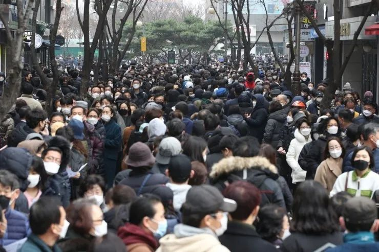

防疫不积极涉嫌“杀人”，韩国“新天地”会长跪地谢罪
原文链接 备份链接 图片来源：中央日报 记者：肖恩 “ “尽人事听天命，上天会眷顾。” ” “新天地方面对此感到无比愧疚，感谢政府倾力抗击疫情，并请求政府予以宽恕。新天地将积极配合政府并提供力所能及的人力物力援助。” 距离韩国“新天地”大 …
澎湃新闻记者 刘栋
新天地教会眼下正处于韩国新冠肺炎疫情风暴的最中心。
3月2日，新天地“教主”——88岁的韩国人李万熙在全国媒体面前双膝跪地，两次磕头谢罪。“我代表新天地教会，向人民表示诚挚的歉意。尽管不是故意的，但仍有许多人被感染。我们尽了最大的努力，但无法阻止一切。我寻求人民的宽恕。我也寻求政府的宽恕。”
这是新天地教会引爆韩国疫情两周以来，教会的最高领导人首次公开发声，也将新天地教会再一次带回到人们的视野里。尽管李万熙表现出极大的歉意，但他同时否认了外界对新天地教会的指责——不认为教会的一系列行为加重了韩国的疫情。这显然不能让民众满意。在现场民众大声的抗议和无数记者的追问下，发布会仅持续了20分钟便草草收场。
如果以2月18日韩国第31号病例——一名新天地大邱分会信徒确诊感染新冠病毒作为分水岭，韩国的疫情防控战可以分为两个截然不同的故事。在此之前，韩国是全球最早监测到输入性病例的国家之一。在严密防守下，一度出现4天零病例增长的局面。然而这一切在2月18日后改变，随着第31号病例的出现，整个疫情急转直下。短短两周内，韩国已成为中国之外疫情最严重的国家。
截至3月4日，韩国累计报告5328例确诊病例，其中大邱占了4006例。而与新天地教会有关的病例是最大的感染群体，至少有2418例，远远超过其他人群。目前，陷入“苦战”的韩国疫情仍没有放缓的迹象，感染人数还在持续增加中。
始发于新天地教会大邱分会的“超级传播事件”是此次韩国疫情的转折点。本是疫情受害者的新天地教会，为何会成为韩国舆论批评的焦点？为什么政府始终称其不配合调查？又是什么原因，让一些专家担心新天地可能会成为疫情进一步扩大的“帮凶”？
新天地教会疫情的暴发，并非是一起简单的公共卫生事件。而要回答上述问题，需要更深层地走进新天地教会的内部。为此，澎湃新闻（www.thepaper.cn）独家专访了前新天地教会信徒，并采访了宗教专家、韩国文化专家和法律专家，结合韩国政府和新天地教会的相关公开信息，还原梳理出整个疫情暴发过程中的关键细节，找寻大邱疫情背后更复杂的真相。

李万熙在记者会上磕头谢罪
超级传播事件
2014年初，一位高中同学介绍当时正在读研的张帆参加了一个自称是研习《圣经》的学习班。
“第一次试听课后，印象还不错。”张帆向澎湃新闻回忆起六年前的那一幕。“当时正好寒假有空，我想《圣经》是了解西方文明‘两希源头’（希腊文明和希伯来文明）的重要书籍，能够有一个免费机会多了解一些也挺好，于是我就继续去听课。”
两个多月后，学习班的负责人认为张帆可以“深造”，鼓励他参加下一阶段称作“福音房”的学习。也是在这个时候，他开始慢慢了解到这个学习班的背后，其实是一个叫做新天地教会的组织。
结束“福音房”的学习后，张帆又被要求继续进入“新天地神学院”学习，整个课程分为初级、中级和高级，每周要上两到三次课，时间长达一年多。在课堂上，他被不断灌输混合了曲解部分《圣经》内容、一些极端释经学理论和末世理论的“新天地神学”。
张帆如今回想起来，整套课程其实非常“严密”。“如果你按照他们的套路去学，绝对会被带进去，而这一切都是为了最后（让人）接受新天地教主李万熙是那个最高权威。”
“神学院”毕业后，经过严格的笔试和面试，张帆才终于有资格正式入教，被韩国新天地教会总部登记在册，成为一名正式的信徒。
根据新天地教会官方网站的信息，该组织由李万熙在1984年创立，全称为新天地耶稣教证据帐幕圣殿教会。根据在此次疫情后该组织首次披露的信息，目前其在韩国国内有大约21.2万名正式成员。由于教义问题和对李万熙本人的崇拜，新天地教会诞生后不久就被韩国主流教会普遍视作“异端”或“邪教”。长期以来，该组织也一直因为骗人入伙、诈骗信徒钱财等各种丑闻在韩国国内声名狼藉。
今年1月中旬，来自全球各地分部的数千名新天地核心成员聚集在韩国首都首尔附近的果川新天地总部，参加该组织每年最重要的活动之一——“国际大会”。
值得注意的是，韩国中央防疫对策本部副本部长权埈郁3月3日在记者会上表示，2名韩国新天地信徒在今年1月曾访问武汉，其中1人在2月下旬确诊感染了新冠病毒。不过目前尚难判断这名患者是否与引发新天地教会的集体感染有关。
目前看来，想要清楚地确定大邱疫情最初传播渠道和“零号病人”的难度已相当大，但是在这段时间内发生的一些事件却能给我们回溯疫情暴发提供重要的线索。
据韩国疾控部门调查显示，在上述1月中旬的新天地“国际大会”结束后不久，一些人数不详的新天地成员在1月31日至2月2日期间，来到了李万熙的故乡庆尚北道清道郡，参加了在当地大南医院举行的李万熙92岁兄长的葬礼。其中包括47名来自大邱的新天地成员。
2月中旬，大南医院封闭式管理的精神病房住院患者和医疗人员开始出现发热症状。2月18日，院内2人确诊。此后该医院的确诊病例开始出现爆发式增长，目前大南医院是仅次于大邱的韩国第二大疫区。
与此同时，距离清道郡不远处的大邱市，一场“疫情风暴”正在悄悄地酝酿。
韩国疾控部门后来确诊为第31号病例的一名62岁大邱妇女，最早于2月7日在当地一家小型医院就诊，抱怨喉咙疼痛。2月9日，她参加了大邱新天地教会千人出席的礼拜活动。
第二天，她开始持续发烧。医生让她住院治疗。2月16日，她溜出医院再次来到教会参加礼拜活动。
卫生官员表示，医生曾至少两次建议这名妇女转到更大的医院接受新冠病毒检测，但遭到她的拒绝。她坚称自己最近几个月没有去过中国，也没有和任何感染者接触过。目前，韩国疾控部门仍在努力搞清楚她是如何感染的。
2月18日，第31号病例终获确诊，然而病毒早已在大邱新天地教会内部传播开来。该教会位于大邱市区一座9层楼独栋大厦内，是新天地在韩国最活跃的分支机构之一，据称有近1万名信徒。
在冬季密闭的空间内，上千人在几个小时内一起唱歌、交谈、近距离接触，这一切都构成了病毒传播的完美条件。此后几天内，不断有新天地信徒被确诊。截至3月3日，在大邱地区4328名接受检测的新天地信徒中，高达62%的结果呈阳性，远远高于其他人群的比例。
大邱市疫情井喷式暴发也自此开始，病毒在大邱的大街小巷散播开来，看似严密的防疫网在瞬间即被攻破。随之而来的，是韩国疫情整体防控形势的急转直下。

韩国街头戴口罩的行人
拒绝配合政府调查
在确认了第31号病例与大邱新天地教会的联系后，韩国当局迅速找到了教会，希望能够协助提供教会成员名单，以追踪数千名与会者和他们的密切接触者，防止疫情进一步扩大。然而新天地教会足足花了一周的时间，才“不情愿”地向当局提供了一份并不完整的成员名单。
据韩国疾控部门披露，最初在接受调查时，第31号病例也是拒不配合，不愿意透露自己的行踪。直到有关部门调查了其手机使用记录，才发现她曾在2月初去过清道郡。然而该患者自称，她没有去过大南医院或参加过葬礼，但在清道时曾使用过当地的公共浴室。
更令人感到不可理解的是，在31号病例确诊后，大邱新天地教会向成员发出了消息，让他们继续各项活动，还告诉成员，如果遇到政府官员的询问，他们应当否认自己的信徒身份或去过教会参加礼拜。多位接近新天地教会的人士向澎湃新闻证实了上述信息的真实性。
“这样的行为对熟悉新天地内部制度的人来说一点也不奇怪。” 张帆告诉澎湃新闻，“如果我是这名患病的信徒，我的第一反应会是先向我的上级汇报，听从教会的指导和安排，而绝对不会听任何人的建议，包括父母、官员。因为最重要的是先保护教会的安全。”
新天地教会后来发表声明称，上述个别人士发出的信息并不代表其官方政策，并且已对发出信息的人进行了纪律处分。
韩国庆熙大学法学博士万延娇认为，新天地教会在疫情初期的一系列反常表现是疫情在大邱快速传播乃至失控的重要“帮凶”。
“新天地起初根本没有认识到疫情的严重性，也没有意识到会对信徒和公众带来的危害，一直拒不配合政府。直到2月23日，大邱疫情已经非常严重，文在寅总统宣布将警戒提升到最高级别后，政府有了强制要求新天地配合的依据，他们才勉强交出材料。”她说道。
2月24日，京畿道行政长官李在明在接受韩国TBS电视台采访时表示，新天地教会最初并没有像承诺的那样与韩国政府合作。根据他们提供的信息，该组织在京畿道239个分支机构中只有100个地址是真实的。
对此，张帆解释道，新天地将自身的保密和安全看得高过一切。他曾亲身经历教会的一些高层手把手指导他们，如何清空手机里所有和新天地相关的信息，如何编造各种理由欺骗政府官员乃至身边的亲人。
“他们认为自己是有着独一真理的教会，不能被别人牵着走，坚持自己的一套。同时，他们不断地让信徒撒谎，教我们如何欺骗最亲近的人包括伴侣、子女，不让他们知道自己是新天地信徒的身份。”张帆说道。
疫情发生后，李万熙在给信徒的一封内部信中表示，“这种疾病的暴发是魔鬼造成的，为的是阻止新天地的迅速增长”。他本人也一直拒绝接受卫生部门的测试，直到2月29日才在记者会前做了检测。
随着疫情不断升级，2月26日，李万熙不得不在新天地官方网站上发表声明说，该组织一直“积极配合韩国政府，防止病毒进一步传播” ，并已在政府保护私人信息的前提下交出了全体教众的名单。
然而这并没有让政府调查和联系新天地成员的工作变得更顺利。据《纽约时报》报道，就在同一天，京畿道政府表示，由于新天地成员通常不接非成员的电话 ，他们不得不要求210名新天地成员打电话给其他33000名成员，询问是否出现相关症状。
在大邱，警方部署了600名警察挨家挨户地敲门寻找名单上仍未联系上的成员，要求他们自我隔离，此前这些人不接电话也不回消息。由于一些教会成员的不配合，警方不得不用追踪手机电话、查看监控录像的方式寻找他们。
2月28日，韩国大邱市长权泳臻更是表示，政府发现新天地在交出的名单中删除了1762名成员的资料，而被删除的人中有部分已感染了新冠病毒。他怒斥新天地此举等同于提交“虚假信息并妨碍政府的工作”，将向警方举报该组织“阻碍政府遏制病毒”。
韩国政府认为，新天地的种种作为，干扰了政府为应对疫情所做的努力，从而导致因疫情死亡人数的上升。3月1日，首尔市市长朴元淳在社交媒体上直呼，李万熙和新天地教会负责人必须为疫情负责。首尔市要求新天地组织者提供教徒的全部信息并下令接受检测。如果李万熙不采取这些措施，将以“过失杀人”等罪名起诉李万熙等领导层。
次日，新天地匆忙宣布举行记者会。在会上李万熙上演了本文开头那一幕“致歉”。
在韩国华人律师张智华看来，这个发布会完全是新天地在起诉压力下为洗白自己而做出的应对之举。在记者会上，李万熙话里话外也一直在将责任推给政府。
“韩国宪法保障了新天地的信仰自由，让他们这种组织能够存在。那么作为教主是不是应该有更大的责任来做一个正确的判断？如果因为你没有做出正确的判断，很多信徒以及无辜的人们受到了伤害。你是否要承担责任呢？”张智华对澎湃新闻分析道。
那么，处于韩国疫情风暴眼的新天地教会，究竟是一个怎样的组织？是什么原因让新天地教会的信徒们如此害怕公开他们的身份？甚至不惜付出生命的代价？

新天地总部召开的大会
新天地教会是一个怎样的组织
“我不相信新天地会向政府完全坦白，因为这会影响到他们的利益和安全，暴露他们的秘密传教行动。”总部位于香港的新兴宗教关注事工（Concern Group on Newly Emerged Religions）总干事杨子聪对澎湃新闻说道。
长期关注新天地的杨子聪表示，新天地在处理这次疫情上的反应和他们一贯的态度一致。“根本上来说，由于他们持有一种反社会的思想，极端以自我为中心，不配合是很自然的。”
在韩国，近几十年来，打着基督教旗号的各种新兴宗教组织层出不穷，而且往往比正规教会更吸引人。据杨子聪的研究，类似于新天地这样有着“教主”的组织在韩国就有100多个。这些组织往往特别强调末世论的悲情以及“教主至上” 的理念。
“韩国的民间文化较单一，民族本身有着比较激烈的情感，在从国外引入一些宗教文化时，往往会烙上 ‘韩国特色’，基督教也不例外。发展的时候一些民间宗教如萨满教的印记常会显露出来。”杨子聪说。
这一点在新天地身上体现得很突出。按照新天地的教义，李万熙是上帝在人间最后的“先知和应许者”，接受信徒近乎于神的膜拜。“这种精神操控是很强的，李万熙在教会内部的影响力令人无法想象。相较政府，信徒会选择无条件地服从他的指令。”张帆说。
李万熙1931年9月出生于庆尚北道清道郡，17岁时寄居在首尔的哥哥家从事建筑业。其间他在韩国国内富有争议的帐幕圣殿教会接受洗礼。后来又中途脱离该教会，自称为《圣经》中提到的“神应许的牧者”、耶稣转世再临之主，于1984年创立了新天地教会。新天地教会有自己的日历，以1984年为元年。它举办自己的“奥运会”，体育场里挤满了来自世界各地的信徒。李万熙经常穿着雪白的服装，拿着他标志性的手持折扇，喜欢向崇拜他的人群行军礼。
从一开始，新天地就被韩国主流教会认定为“异端”（与正统基督教神学相违背的宗教信仰派别）。韩国主流教会经过调查后指出，李万熙本身没有接受过任何正规的神学培训，其在帐幕圣殿教会的经历是其神学思想的主要来源。他不承认基督教普遍信奉的《圣经》为信仰的最高权威。而自称是直接从上帝得到启示的人，只有自己的言论才是真理。
杨子聪表示，和其他“异端”教会相比，新天地是最隐蔽的一个。一位韩国资深宗教界人士告诉澎湃新闻，新天地之前对外完全不公开，因为疫情外界才第一次知道新天地到底有多少人，机构分布在哪里。
而新天地教会最受主流教会诟病的是其招募信徒的手法。上述宗教界人士向澎湃新闻表示，如果要说哪个异端团体最扰乱韩国教会，非新天地莫属。新天地教会常常让被称为“收割者”的信徒隐藏自己的真实身份，潜入其他教会，向基督徒进行传教，拉他们加入新天地。
这一点正是新天地教会始终不愿意配合政府当局公开其成员名录的最重要原因。“所有教会都不欢迎新天地的人，如果他们的身份被公开，会带来极为不利的影响。”张帆说道。韩国政府也多次在调查中发现，多名患者直到自己确诊后才透露自己是新天地信徒。其中包括一名在大邱市负责检测新冠病毒的政府公务人员，直到检测结果呈阳性，才承认自己是新天地教会的成员。
不过，新天地国际传教部门负责人金信昌（Kim Shin-Chang，音）在接受美国有线电视新闻网（CNN）采访时辩称，因为被视作异端邪教，新天地的信徒遭到歧视，所以许多教会成员才不敢公开自己的身份。
中山大学国际翻译学院朝鲜语系助理教授黄永远指出，“新天地教会提交的名单真伪性存在问题，且尚未公开很多秘密传教和聚会设施，这对当局的防疫排查都造成了干扰。不仅如此，虽然新天地教会停止了大型礼拜，但是小规模聚会、在伪装成咖啡馆等其他设施的福音房的传教活动很可能还在不断进行，这都是十分危险的。”
更重要的是，黄永远表示，任何宗教如果利用宗教权威对信徒进行人身与精神控制，并进而扰乱正常的社会秩序，肯定是有害的。
但他同时也认为，尽管新天地教会在处理此次疫情中有着明显的过错，但是不能因为它是韩国疫情的震源地，就将所有责任和各种黑锅都趁机扣在其头上。
疫情发生后，已有超过50万人在网上向韩国总统办公室提交的请愿书上签名，要求解散新天地教会。
2017年，在与另一个“异端”教会的接触中，张帆意识到自己所参加的新天地教会可能也“有问题”。“后来我自己去网上查了很多信息，发现很多负面的内容，基本上认定这是一个邪教。经过很长时间的思考后，我决定退出。”张帆说，在离开新天地后，该组织的地区负责人亲自来找他谈话，并派他的高中同学劝他回来。最后碍于朋友的情面，张帆勉强答应。然而没多久，由于他发布了一些“有损于教主形象”的资料，新天地很快主动将其除名。
在张帆看来，李万熙在新闻发布会上道歉的内容很肤浅，也回避了新天地教会的核心问题，这样的表态绝不意味着他会配合政府。“只是因为他不想被起诉，不想坐牢，哪怕是一天也不愿意。”
“这是一个控制人的 ‘邪教’，如果要配合政府，就要放弃自己的那一套。这是他们绝对不会做的。”张帆总结道。
（应受访者要求，张帆为化名）
戳这里进入
“全国新型冠状病毒感染病例实时地图”↓↓↓
本期编辑 周玉华
推荐阅读


原文链接 备份链接 图片来源：中央日报 记者：肖恩 “ “尽人事听天命，上天会眷顾。” ” “新天地方面对此感到无比愧疚，感谢政府倾力抗击疫情，并请求政府予以宽恕。新天地将积极配合政府并提供力所能及的人力物力援助。” 距离韩国“新天地”大 …
原文链接 备份链接 “若不能有效阻断社区传播， 大邱疫情很可能扩散至全国” 2月24日，首尔市举行紧急会议，称将采取“先发制人”的措施遏制疫情，包括设立24小时运行的筛查中心，让医护人员在此检测疑似病例。图为首尔市市长朴元淳（右二）在会议 …
原文链接 备份链接 据韩联社报道，韩国卫生部门通报，截至3月1日下午4时，韩国较当天上午9时新增新冠肺炎确诊病例210例，累计确诊病例达3736例。与前一天下午4时相比，一天内新增确诊病例586例，累计18人死亡。 另据央视新闻消息，韩国 …
原文链接 备份链接 韩国已经过了政府防疫部门能独立控制疫情的阶段，现在已经进入整个社会都要配合防疫的关键时期。根据相关部门的推演，3月3日之前将是韩国是否能有效控制疫情的时间窗口 2月23日，在韩国大邱，工作人员在一家市场内进行消毒工作。 …
原文链接 备份链接 韩国大邱市，工作人员正在消毒，其身后建筑张贴着新天地教会的宣传广告。图片来源：Yonhap 记者：潘金花 “这场疾病，出自恶魔之手，意图扼杀‘新天地’的飞速壮大。正如约伯所经受的试炼那样，它是想摧毁我们的进步。” 就在 …